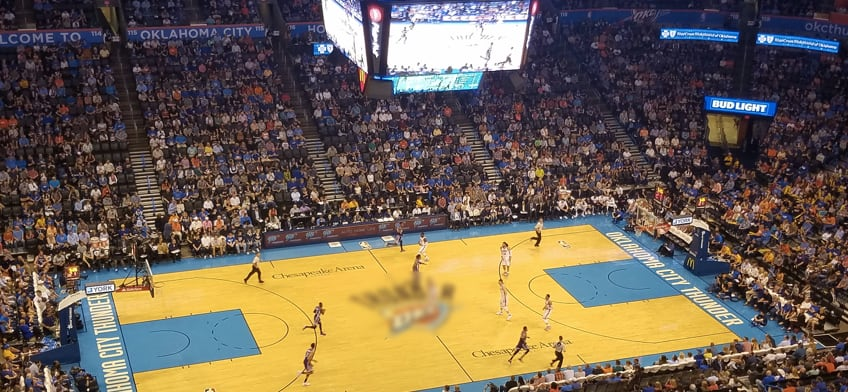

Oklahoma City Thunder - A equipe foi formada em 1967 como Seattle SuperSonics e, após se mudar para Oklahoma City em 2008, passou a ser conhecida como Oklahoma City Thunder. Com uma sólida base de torcedores, a franquia se destacou com estrelas como Kevin Durant, Russell Westbrook e James Harden, além de ser finalista da NBA em 2012. Após uma reestruturação, a equipe continua a se concentrar no desenvolvimento de jovens talentos.
Elenco - Shai Gilgeous-Alexander (#2), Chet Holmgren (#7), Jalen Williams (#8), Luguentz Dort (#5), Isaiah Joe (#7), Aaron Wiggins (#6), Kenrich Williams (#34), Alex Caruso (#6).
Títulos NBA - 0
Títulos Conferência - 1 (2012)
Estádio - Paycom Center (18.203)
